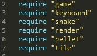
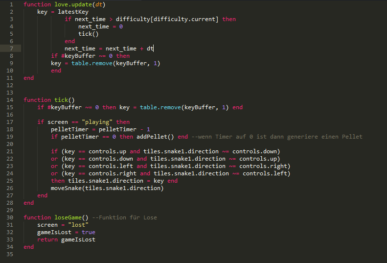
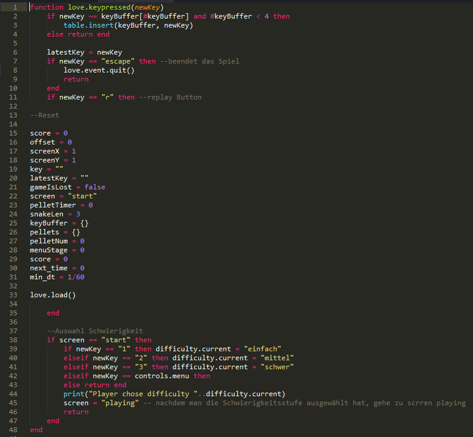
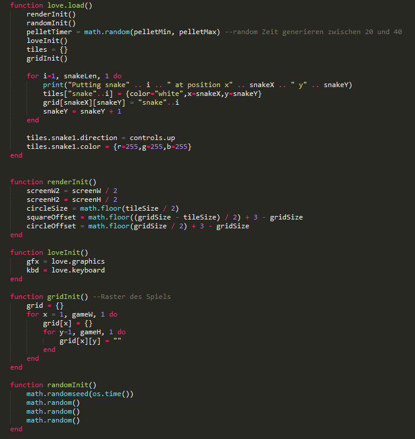
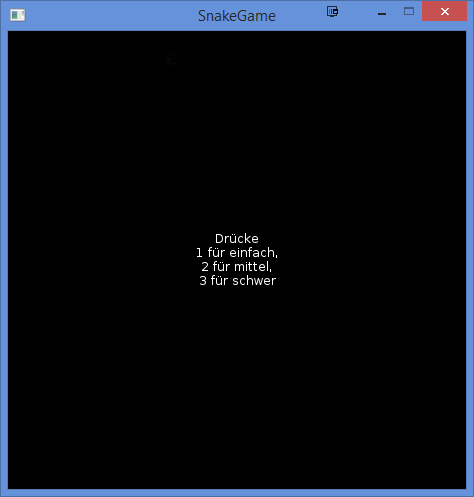

Hallo!
Dies ist eine Projektseite über den Lernprozess von Lua und das Game Framework Löve2d
Hallo!
Dies ist eine Projektseite über den Lernprozess von Lua und das Game Framework Löve2d
„Ein einfaches SnakeGame, bei dem man sogenannte "pellets" einsammeln muss, damit unser Snake länger wird. Falls man den Rand oder sich selber berührt, verliert man. Das Spiel kann man zwar nicht gewinnen, aber man kann sich mit anderen Freunden messen.“
Da
jeder der Mitglieder sein eigenes Spiel erstellen sollte, entschied
ich mich für den Klassiker „Snake“. Ich will das
Spiel in drei Schwierigkeitsgraden einteilen und zwar einfach, mittel
und schwer. Dabei sollte je nach Schwierigkeitsstufen das Spiel
schneller oder langsamer ablaufen.
Man muss sogenannte pellets
einsammeln, damit das Snake länger wird. Mit jedem pellet, dass
man eingesammelt hat, wird unser Score um eins erhöht. Die
pellets werden zufällig generiert.
Nachdem man den Rand oder
sich selber berührt hat, erscheint eine Anzeige, welche die
Punkte anzeigt und den Schwierigkeitsgrad auf den man gespielt hat.
Es wird auch noch gefragt ob man erneut spielen will oder aufhören
möchte. Man kann leider nur drei Mal das Spiel erneut spielen,
da ich den Bug nicht gefunden habe. Deshalb muss man das Spiel
nochmals starten, falls man weiterspielen will.
Um die Aufgabe ein bisschen zu erleichtern, habe ich einen Code eines anderen Snake-Games als Beispiel genommen.
Damit das Ganze ein bisschen übersichtlicher gestaltet ist, habe ich es einfach aufgeteilt.
Main.lua braucht dann folgendes:


Hier sind die Steuerungen des Spiels enthalten und die Funktion für loseGame

Wenn man „escape“ drückt, wird das Spiel beendet und wenn man „r“ drückt wird das Spiel neugestartet. Hier ist auch festgelegt mit welcher Taste man die Schwierigkeitsstufen auswählen kann.

Wird festgelegt, wo der Spieler starten muss.
pellet wird an einem zufälligen Ort generiert
Wird festgelegt in den verschiedenen screens passieren sollte
Wenn
Snake Rand berührt, wird screen „lose“
angezeigt.
Wenn Snake pellet berührt, wird die Länge und
Score um eins grösser.
